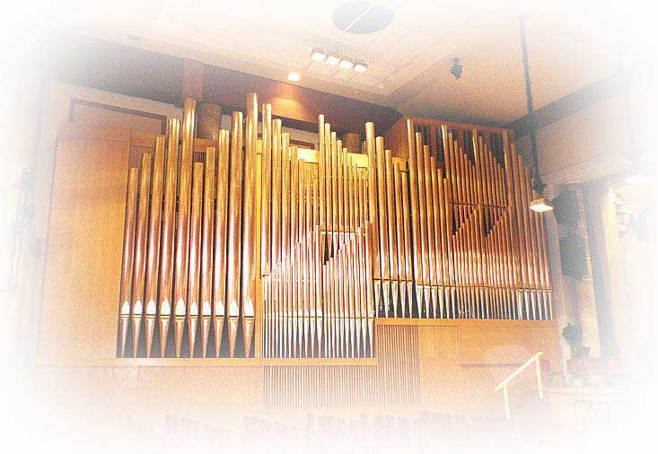

Nové koncertní varhany Janáčkovy filharmonie Ostrava

Koncem roku 1999 získala Janáčkova filharmonie Ostrava po dlouhých tahanicích špičkový nástroj, vyřazený ze sjezdového sálu v Praze při rekonstrukci pražského Paláce kultury na kongresové centrum. Nástroj byl v průběhu roku 2000 v Krnově rekonstruován, zmenšen a přestavěn (viz dispozice) do podoby vhodné pro koncertní sál Janáčkovy filharmonie ve vítkovickém domě kultury (viz novinový článek z léta roku 2000). Teprve tady se mu dostalo důstojného prostředí a taky se na něj pravidelně hraje (v Praze se na něj dle dostupných informací hrálo během dvaceti let jeho existence asi dvakrát...). Jedná se o druhé nové koncertní varhany v Ostravě (první byly postaveny v roce 1997 v koncerním sále Janáčkovy konzervatoře Ostrava). Ve vítkovickém domě kultury (nyní sídle Janáčkovy filharmonie) jsou ještě jedny starší malé koncertní varhany. Počátkem devadesátých let byl původní dům kultury pronajímán jako sídlo různých firem, přitom byly tyto varhany přestěhovány do jiného sálu a nyní jsou nefunkční.
Inaugurační koncert 20.10.2000
 |
|
|
Náčrt
uspořádání varhan.
|
Celkový pohled na nástroj. Zcela vlevo jsou píšťaly pedálového stroje (32 stopé v prospektu), vpravo nahoře je vidět žaluziovou skříň třetího manuálu. Vzdušnice jednotlivých strojů jsou z prostorových důvodů uspořádány nad sebou, půdorys varhan je pak lichoběžníkový až trojúhelníkový o ploše přes 40m2. Celkový počet píšťal všech pěti strojů (4 manuály plus pedál) přesahuje 5,5 tisíce, váha nástroje činí 18,6 tuny.
| Původní opus v pražském Paláci kultury. Srovnáme li vzhled prospektu s předchozím obrázkem, je zde značná podobnost, jen uspořádání strojů na patra činí varhany trošku užšími. Chybí také druhý - mechanický hrací stůl, který byl v Praze přímo ve skříni nástroje. V Ostravě tak má nástroj jen elektrickou trakturu a pohyblivý, kabelem připojený hrací stůl. |
Detail prospektu. Je až s podivem, kolik lidí si myslí, že to co vidí (prospektové píšťaly principálů) jsou celé varhany, kolik lidí se při slovech ředitele filharmonie na inauguračním koncertu "nástroj má přes pětapůltisíce píšťal" s hrůzou v očích otočilo a rychle začalo v duchu prospektové píšťaly počítat!
 |
Hrací stůl je pohyblivý, vpravo jsou vidět kabely elektrické traktury. Po stranách se nacházejí desky s rejstříkovými sklopkami. Pod notovým pultem jsou vypínače jazyků, ukazatele úrovně crescenda a žaluziové šlapky, vypínač osvětlení a motoru ventilátoru. Pod jednotlivými manuály se pak nacházejí ovládací tlačítka předvolených a volných kombinací, ovládání je zdvojeno s pistony nad pedály. Rejstříků (včetně spojek) je 87. |
 |
| Detail pistonů pod hracím stolem, uprostřed válec crescenda a šlapka žaluzií. |
Celkový pohled do sálu ve vítkovickém Domě kultury. Varhany nyní tvoří jeho přirozenou dominantu. Snad se časem dočkáme i samostatných varhanních koncertů mimo jednotlivé programové cykly Janáčkovy filharmonie...